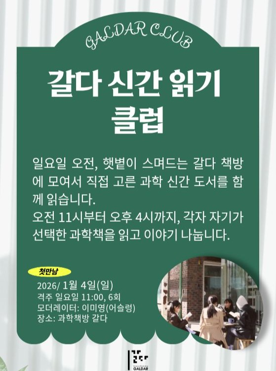

지정 게시물은 2026년 갈다 신간 읽기 클럽 안내입니다. 이 페이지의 프로그램 정보는 해당 시즌의 기록이며, 2027년 일정은 공지되지 않았습니다.
갈다 신간 읽기 클럽
일요일, 책방 2층에 모여 각자 선택한 과학책을 읽습니다. 차와 간식, 그리고 서로 다른 독서 경험이 하루를 채웁니다.
게시물 안내
🎊갈다클럽 오픈🎊 안녕하세요, 갈다입니다. 2026년 새해의 시작 갈다클럽 시즌9와 함께해요.
과학이 궁금한 입문자부터 진정한 과학덕후까지 모두가 즐겁게 참여할 수있는 갈다클럽!
지금 갈다 홈페이지(
galdar.kr
)에서 신청하세요🤩
😎일요일 하루, 독서를 위한 시간도 가지며 다른 사람들이 고른 과학책의 이야기도 들을 수 있는 곳.
평소 그냥 지나쳤을지도 모르는 흥미로운 책에 대한 이야기를 나눌 수 있는 곳.
바로 여기, <갈다 신간 읽기 클럽> 입니다.
햇볕이 스며드는 갈다 책방 2층에 모여서 함께 책을 읽고 차와 간식을 먹어요.
오전 11시부터 오후 4시까지, 각자 자기가 선택한 과학책을 읽고 이야기 나눕니다.
🗣️모더레이터 : 이미영(어슬렁)
⏰일정 : 2026년 1월 4일, 1월 18일, 2월 1일, 2월 22일, 3월 8일, 3월 22일(일요일), 11시~16시(5시간), 총 6회
🏠장소 : 삼청동 과학책방 갈다
💸참가비 : 19만원 (도서적립금 9.5만원 포함)
📯신청기간 : ~ 2025. 12. 31(수)까지
📩신청방법 : 갈다 홈페이지(
galdar.kr
)